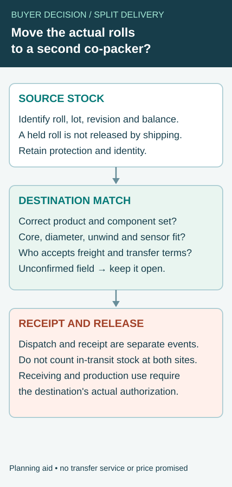

A label order is large enough for several months, but the first shipment must reach one co-packer next week and the balance will go elsewhere later. The printer knows the total quantity. The warehouses know their delivery addresses. Nobody has yet tied the individual releases to the artwork and packing runs that will consume them.
Create a release schedule by SKU, component, revision and destination before approving a split delivery. The practical goal is to make each shipment usable on arrival and to keep the undelivered balance visible. A complete purchase-order total does not guarantee that any one packing run has the right labels.

Separate the production order from the delivery releases
One manufacturing order may be shipped in several releases. Alternatively, each release may require a separate printing run. Ask the supplier which arrangement is proposed because it affects inventory ownership, storage, scheduling and the evidence accompanying later deliveries.
Do not assume that paying for a total quantity establishes how long the printer will hold it or what happens if the artwork changes. Confirm the offered storage period, release notice, quantity tolerances, cancellation conditions and any additional charges in the actual quotation. These are commercial terms to agree, not universal label-industry policies.
The quote comparison guide helps keep the offer tied to one specification. A split-delivery schedule adds the time and destination dimension to that baseline.
Build each release around the packing requirement
Start with the planned finished products. List the front, back, neck or seal components each pack needs, then allocate the corresponding labels to its destination. Keep setup, inspection and retained-sample allowances explicit and based on the actual process.
For a hypothetical launch, the first co-packer may need only two flavors while a second facility handles the remaining range. Shipping equal quantities of every artwork to both locations can create local excess and local shortages even when the combined total is correct. Allocate against the real packing plan instead of dividing the order neatly in half.
If front and back labels are supplied on different rolls, ensure each destination receives compatible revisions and quantities. A carton of current fronts cannot be treated as ready for production if its matching back labels remain in a later shipment.
Use a delivery-release matrix
| Release field | What the buyer and supplier should agree |
|---|---|
| Release identifier | Unique reference linked to the master PO |
| SKU and component | Exact artwork, revision and label part |
| Quantity | Required, confirmed and any permitted variance |
| Destination | Named facility, receiving contact and delivery instructions |
| Packing run | Intended run or required availability window |
| Roll format | Core, unwind and roll quantity for that facility |
| Shipment evidence | Packing list, roll/carton IDs and tracking reference |
| Remaining balance | Quantity still held, location and release status |
| Change authority | Who can amend quantities, date or destination |
Keep a dated version of the matrix with the order. If a release changes, issue an amended line and retain the previous version. An informal message that says send the rest is too ambiguous when several artworks and destinations are involved.
Give the undelivered stock a status
Ask whether the balance has been printed, finished, inspected, packed or merely scheduled. Those states have different flexibility. A later artwork change may still be easy before printing and costly after finished rolls have been allocated to storage.
Record who owns the held stock and which conditions apply to its storage and release. Obtain construction-specific storage guidance and ask how the supplier identifies the original production reference. A later delivery date does not automatically make the material newly manufactured.
If the buyer changes a label version, locate the affected balance before ordering more. The multi-SKU artwork guide traces a copy change across files; the release schedule traces the physical quantities that those files have already created.
Manage a short first shipment deliberately
If the first delivery cannot cover the intended run, compare actual options: reduce the run, move the slot, split the products differently or arrange an agreed partial supply. Ask which components and artworks can be delivered together. A shipment that is early but missing a required component may have little operational value.
Confirm the freight and handling consequences of an additional delivery before assuming it is a free solution. Do not invent a standard express-shipping surcharge or guaranteed transit time. Use the carrier and supplier proposals relevant to the destination and date.
Keep the receiving team informed of the revised allocation. Otherwise, it may record a planned partial shipment as a supplier shortage or release material intended for another facility. The co-packer receiving checklist separates receipt from production authorization.
Before moving a held label release to another co-packer
An unexpected schedule change can leave finished label rolls at one facility while another co-packer needs the same artwork. The immediate question is not simply whether the destination address can be changed. The buyer needs to establish whether the specific physical rolls match the second facility's authorized product set and equipment, and who will control the transfer and receipt.


Start with the material already held: item, artwork revision, component, construction, roll or lot reference, available quantity and current release status. Ask the original stock holder to identify the actual rolls rather than copying the original purchase-order total into a new shipping instruction. A shared artwork file is only one part of the match.
| Transfer question | Evidence or confirmation to request | Exception to keep open |
|---|---|---|
| Authorized product set | Destination SKU, component and approved artwork revision | The same front design may not pair with the same back version |
| Physical rolls | Roll IDs, quantities or estimates, condition and hold status | A physically present roll may not be released for use |
| Applicator interface | Destination equipment requirement for core, outside diameter, unwind and detection | A roll that ran at the first site may not fit the second |
| Protection and identity | Wrapping, carton marks and roll-to-carton relationship | Repacking must not make the original identity disappear |
| Ownership and freight | Authorized sender, receiver, transfer terms and actual quote | Ownership, transit cost or responsibility may be unresolved |
| Receiving and release | Named contact, packing record and intended run | Delivery does not automatically authorize production use |
Compare one confirmed roll against the destination job
For an illustrative sauce brand, facility A may hold a current front-label roll while facility B needs the same product next week. The buyer checks that the back-label component and revision are also available at B, then asks B's equipment owner whether the actual core, roll diameter and unwind match its applicator. If the roll is on hold for a condition question, the transfer request does not release it. No dimensions, freight charge or line capability are assumed in this example.
If the roll cannot be used as supplied, ask the responsible parties whether a specifically agreed rewinding or repacking arrangement is available. Record who performs it, how roll and lot identity remain connected, and what the destination needs to inspect. Do not assume that a smaller outside diameter or changed unwind can be provided without cost, time or a new handling review.
Keep the transfer out of two available balances
Record the source location, transfer authorization, dispatch and actual receipt as separate events. During transit, material should not simultaneously appear as unrestricted stock at both sites. If the destination receives fewer rolls or observes damage, retain the discrepancy and hold the affected material under its own process. A tracking update is not evidence that the correct revision and roll format passed receiving review.
The roll-format guide covers the applicator interface; the co-packer receiving guide distinguishes arrival from use authorization. This transfer worksheet links those decisions to one identified held release. For a supply discussion, provide the source and destination, roll identities, component/revision, confirmed quantity and both facilities' relevant format requirements. Actual transfer services, freight, ownership and timing must be confirmed for the project.
Reconcile every release against the master balance
After dispatch and receipt, compare the confirmed quantity with the planned release. Record shortages, excess, damage, inspection holds and approved substitutions in the same schedule. Update the remaining balance by artwork and component, not only by total pieces.
Require a clear decision when one destination wants to transfer stock to another. Confirm identity, condition, quantity and the receiving facility's machine requirements before redirecting it. The same artwork does not ensure that a roll prepared for one applicator can be loaded onto another.
Give the next release a clear instruction
A useful release instruction names the master order, schedule revision, required lines, destination and requested availability. Ask for supplier confirmation of what can actually be dispatched and when. Keep requests, confirmations and actual receipt dates distinct so the schedule remains an operational record rather than a list of optimistic dates.
Send a split-delivery label brief with quantities by SKU and component, destinations, packing windows and the proposed release sequence. Identify whether stock should be produced once and held or made in separate runs. The form opens an email draft; attach the schedule in your email or through the listed WhatsApp channel.